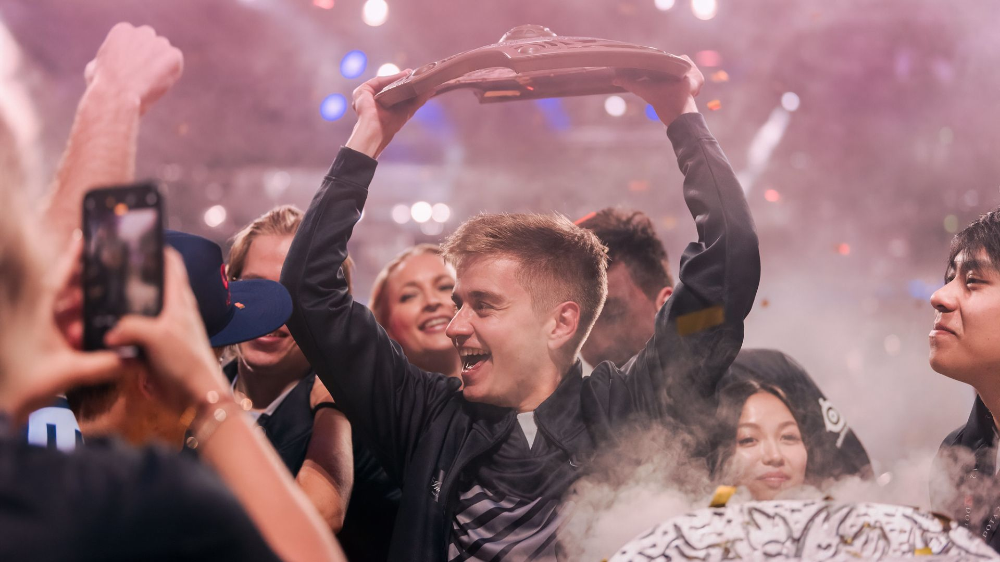
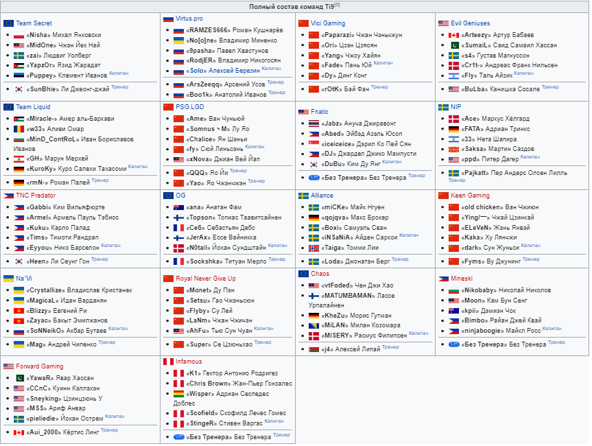

Турнир по игре Dota 2, организованный компанией Valve. Битва за Эгиду чемпионов состоялась на территории Китая, Шанхай в Мерседес-Бенц-Арена — с 20 по 25 августа 2019 года. Ежегодный турнир состоялся в девятый раз подряд и традиционно стал крупнейшим соревнованием по Dota 2 за год.
Участие в турнире приняли восемнадцать команд, двенадцать команд с наивысшими показателями DPC баллов в сезоне получили прямые приглашения на The International 2019. Первой командой получившей прямое приглашение по DPC баллам как и на турнире в 2018, снова стала Virtus.Pro. Другие шесть команд определились в открытых и региональных отборочных. Открытые отборочные — с 3 по 6 июля 2019 года. Региональные отборочные — с 7 по 15 июля 2019 года. Вскоре после того, как 30 июня 2019 года на «Epicenter Major» разыграли последние DPC баллы, основной костяк из 12 команд был сформирован, оставшиеся 6 мест заняли команды прошедшие отборочный этап.
